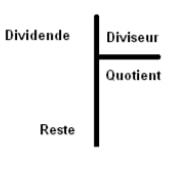
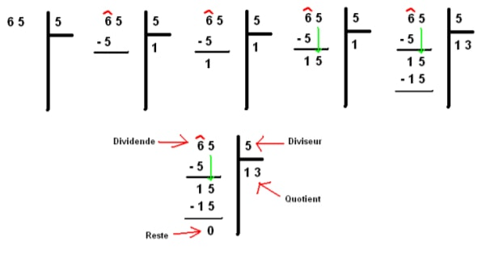
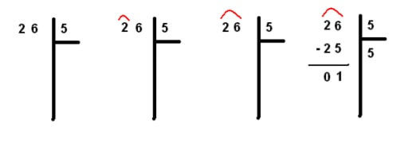
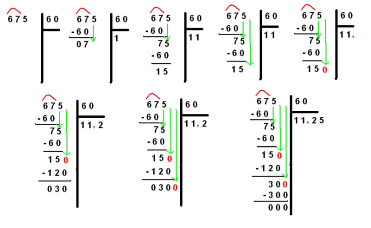

La division nous permet d’obtenir un quotient et un reste en divisant
le dividende par le diviseur. Elle se pose comme suit :

Pour effectuer une division, il faut tout d’abord la poser. Ensuite, on va
prendre le premier chiffre (celui à gauche) du dividende et on regarde
si le diviseur est compris dedans et combien de fois.
• Si le premier chiffre est plus grand que le diviseur, on note dans le quotient combien de fois le
diviseur est présent dans le premier chiffre du dividende et on note le résultat en dessous du
premier chiffre du dividende. On effectue ensuite une soustraction et on note le résultat.
Ensuite on fait descendre le deuxième chiffre du dividende à côté du résultat de la
soustraction et on refait la même chose jusqu’à ce qu’on ait utilisé tous les chiffres du
dividende.
• Si le premier chiffre est plus petit que le diviseur on prend les deux premiers chiffres du
dividende, si les deux sont plus petits, on prend les trois premiers, etc …
Exemple 1 :
Dans 6, 5 y est une fois. Je pose 1 dans le quotient. 1 x 5 = 5. Je pose 5 en dessous du 6. 6 – 5 = 1.
Je fais descendre le 5. Dans 15, 5 y est 3 fois. Je pose 3 dans le quotient après le 1. 3 x 5 = 15. Je
pose 15 en dessous de 15. 15 – 15 = 0. Donc 65 : 5 = 13 (reste 0).

Exemple 2 :

Les divisions complexes correspondent à l’obtention de quotient à virgule.
En fait dans ce cas, on ne va pas s’arrêter au nombre de chiffres du dividende, mais on va continuer
jusqu’à obtenir un certain nombre de chiffres après la virgule pour le quotient, ou jusqu’à avoir un
reste égal à zéro.
Après avoir utilisé tous les chiffres du dividende, on rajoutera autant de zéros que nécessaire et dès
l’ajout du premier zéro, on mettra un virgule au quotient
Exemple:
>
